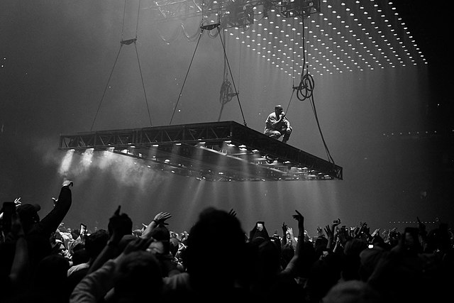

Sample Hunting
Tracing how older records are reshaped into new hooks, outros, and textures.
Samples, stories, and standout moments
A cleaner look at the sounds, performances, and production choices that made the catalog feel larger than a playlist.
Overview
Kanye West, now legally known as Ye, has had a career filled with major highs, public controversy, sharp pivots, and a sound that keeps changing shape. This site focuses on favorite musical moments: memorable verses, bold samples, and stories behind the records.
The best parts of the catalog often come from contrast: soul records turned into arena-sized hooks, rough electronic textures next to choir vocals, and rap records that feel closer to short films than singles.
Tracing how older records are reshaped into new hooks, outros, and textures.
Looking at the stage design and performance choices that made tours feel cinematic.
Connecting the finished tracks to the decisions and collaborators behind them.
Sample City
One of the most interesting parts of Ye's discography is his use of samples, from old soul music to modern electronic textures. Favorites include "Gyongyhaju lany" by Omega on "New Slaves", "Sermon (He'll Give Us What We Really Need)" by Holy Name of Mary Choral Family on "On Sight", and Otis Redding's "Try a Little Tenderness" on "Otis".
For more samples from Ye and other rap artists, visit the Sample City playlist.

"New Slaves" uses an extended outro built around Gabor Presser's "Gyongyhaju lany", with Frank Ocean vocals layered into the ending. Presser later sued over the uncleared sample, and the dispute was settled outside court.
"On Sight" opens Yeezus with an abrasive sound that immediately signals the album's frustration and stripped-down style. For more detail, check out WhoSampled.
"Otis" turns Otis Redding's "Try a Little Tenderness" into a loud victory lap with Jay-Z. The video is just as oversized, centered on a Maybach transformed into a custom stunt car.
Watch more
Old studio footage can make the creative process feel less mysterious and more human. Click the image to visit Netflix and learn more about jeen-yuhs.
Read the fandom story